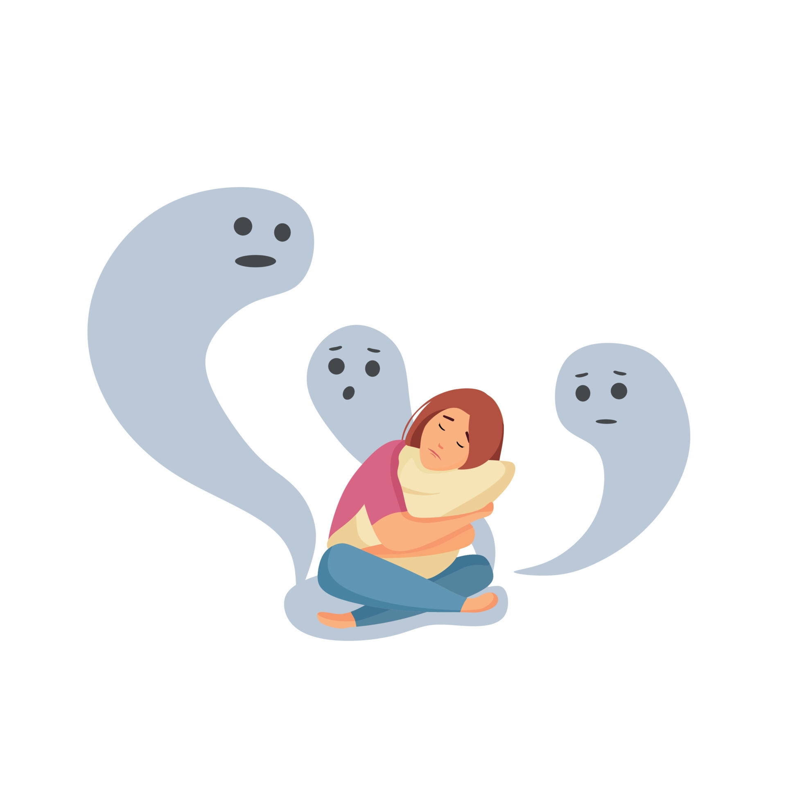
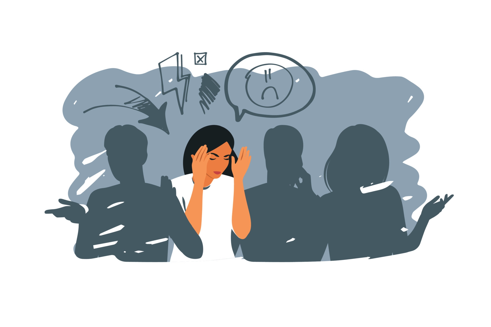
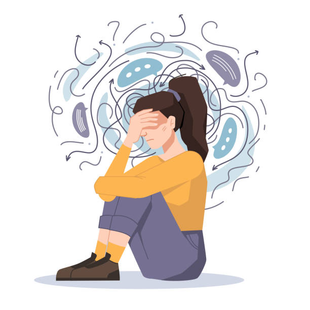
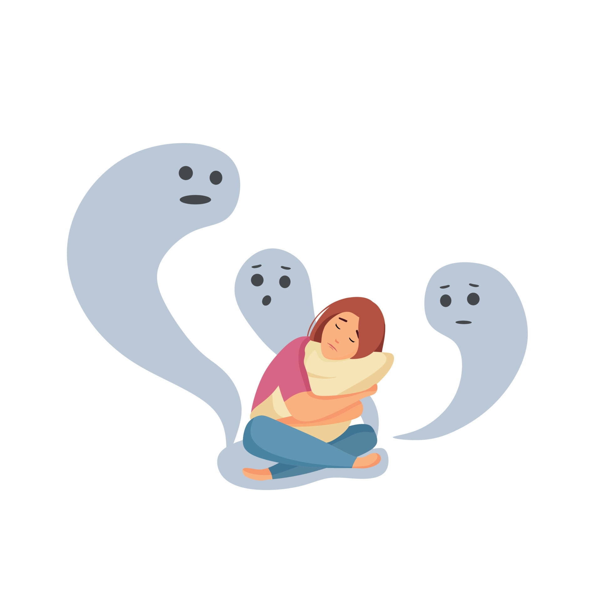
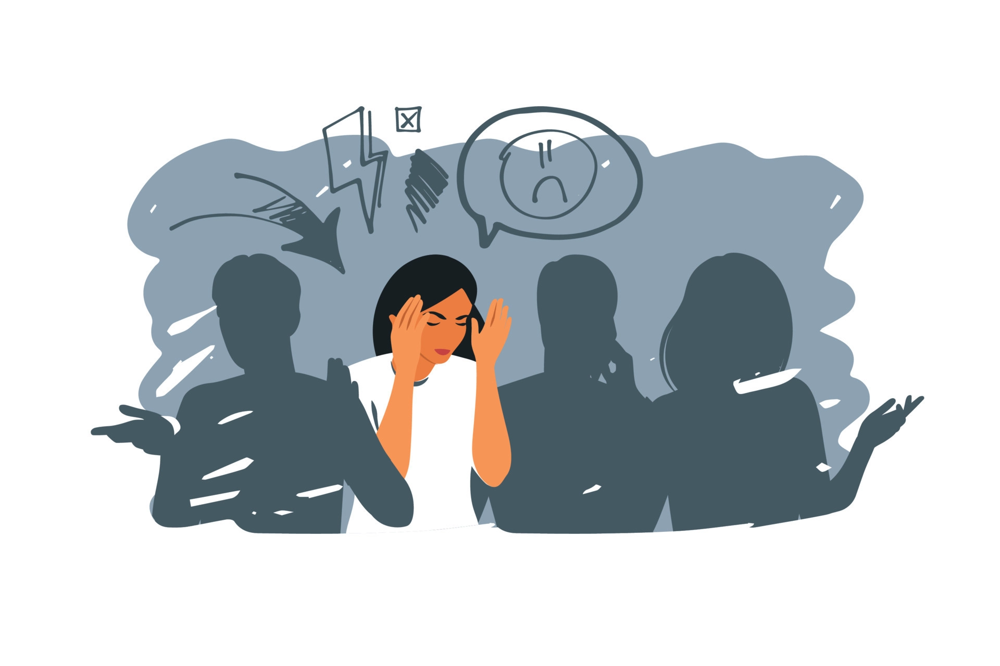
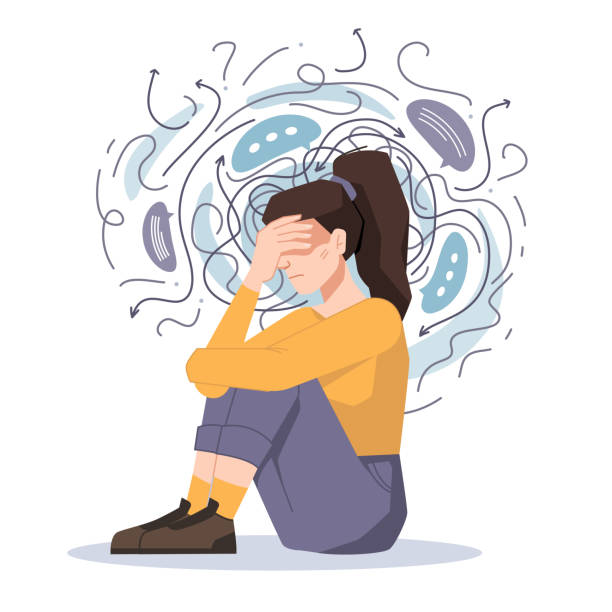

Trastorno de ansiedad social
La fobia social es un trastorno de ansiedad basado en un miedo irracional ante situaciones sociales que involucran el escrutinio ajeno, ante las cuales el paciente se comporta de forma tímida y ansiosa y le dificultan o impiden la interacción con otras personas algo que puede influir en su vida cotidiana.
 




